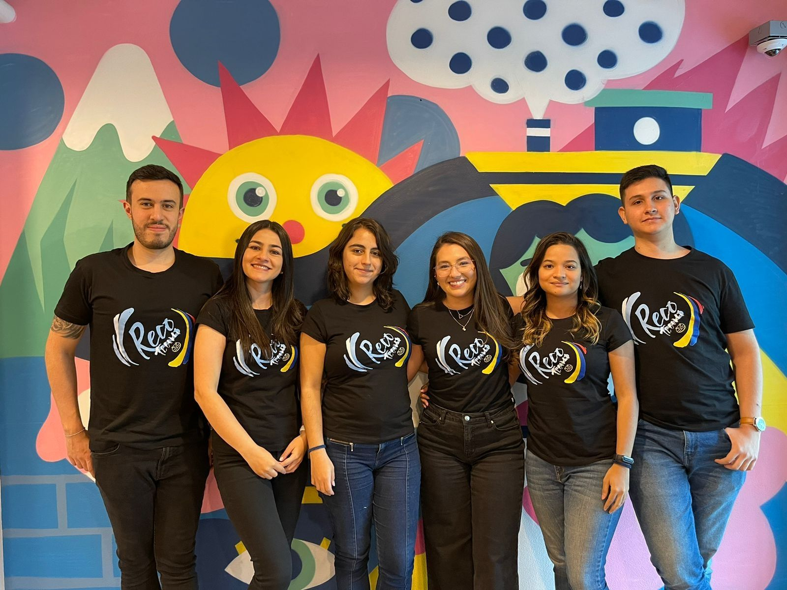

About my writting hobby:
About my writting hobby:
Through my writing, I have the privilege of unraveling complex algorithms, deciphering the nuances of programming languages, and exploring the harmonious dance of data structures. Beyond the confines of the screen, I'm driven by the opportunity to empower both budding enthusiasts and seasoned tech adventurers.

Witnessing those "aha" moments when readers grasp new ideas fuels my dedication to propagate the joy of learning. In this ever-evolving landscape, my goal is simple: to share knowledge that sparks curiosity, fuels innovation, and fosters a united community of learners. With that said, I am delighted to share some of my writings: